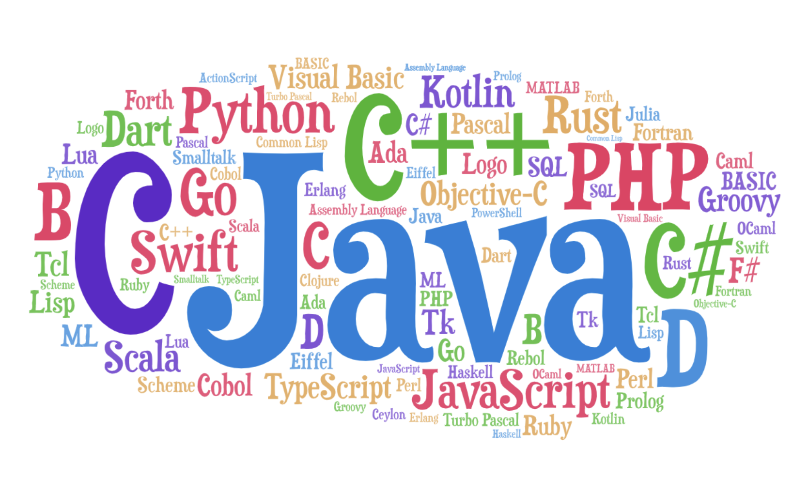

Reactive Object-Oriented Programming


Object-Oriented Programming was designed to program objects now that we know how to program them we needed to make them evolve autonomously that’s why creating Reactive Object Programming language make sense for programming evolving object.
a programming language that allows building computational objects that will behave according to the environment they will be deployed and will mutate according to this environment behavior in order to apply the correct parameters and run the correct algorithm that will allow them to reach easily their goals that can be dynamic. Understanding and knowing how convergent systems works and the mathematical objects that define their behavior will for sure help build a better reactive object programming language, a language that allows building reactive algorithms that adapt themselves smartly to the inputs.
Observing how natural objects behave can also be a worthwhile signal that can help design this language better. We have already seen how animals teach us networking and how an ant colony movement can bug leading to the death of thousands of elements. When you are building something it is always good to leave your comfort zone but this comfort zone is not your quiet peaceful office but this domain into which you're specialized. it helps to forage other fields like cognitive science, biology, mathematics, physics, and others in order to benefit from the power of analogy for coming up with new simple innovative ideas.
This reactive programming language can share features with this toy programming language and allow the design of toys that will interact with kids as they grow fitting with the interest and passion of the kid. All of this seems to be like science fiction but we have never been so close to achieving it because of the availability of data and the increase of computing power with the “nanoization” of electronic components. Technology is making the doing part easier and easier day by day but the infinite number of opportunities to do smart and exciting things can immobilize us from doing one simple thing. Doing the smallest things is the most difficult than doing the big ones as Scott Galloway said in his book the Four …
…in an economy where it’s never been easier to be a billionaire, but it’s never been harder to be a millionaire. Scott Galloway — The Four
Book dojo has now not a cent as revenue and zero dollars as budget but Book Dojo is worth 5 data-driven books ready to be published for the book lovers and book communities. What we need is a clear engagement on your part before we publish them because Book Djo has a new publishing model where the data-driven are sold to the interested person before publication an nobody can get a book once published only from one of her or his friend who showed interest before the publication of the data-driven book. You can show your interest using this link.